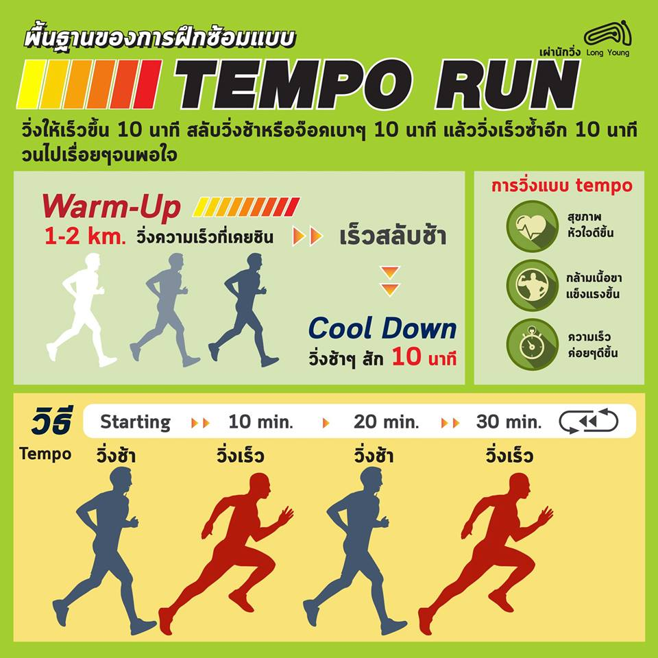
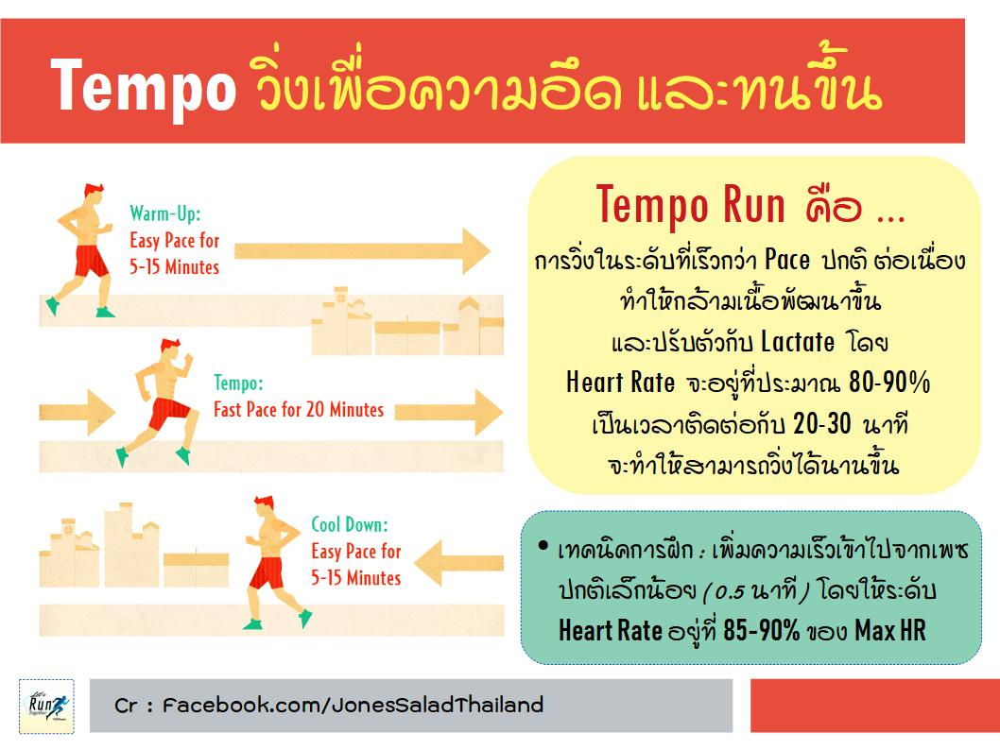
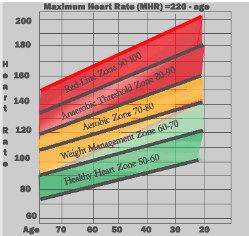

Tempo Run คืออะไร
01/07/2016 · by วิ่งไหนดี · in tempo run
Tempo Run คืออะไร
เพื่อนๆเคยสงสัย หรือ เคยได้ยินเกี่ยวกับเทคนิค Tempo Running มาก่อนไหมครับ เพื่อนๆคงเคยได้ยิน Workout รูปแบบต่างๆ เช่น
Fartlek Workouts หรือ Interval Workouts ซึ่ง Tempo Running ก็เป็น Workout รูปแบบหนึ่งครับ ลักษณะ Tempo Run
จะเป็นการวิ่งในระดับที่เร็วกว่า Pace ปกติแบบต่อเนื่องครับ ทางเทคนิคเรียกว่า Lactate-Threshold หรือ LT ครับ เป็นระดับที่เกิด
การสะสมของกรด Lactic ในกล้ามเนื้อครับ สังเกตง่ายๆเวลาเพื่อนๆวิ่งเข้าสู่ Tempo Pace จะเริ่มรู้สึกออกจาก Comfort Zone

Tempo Run ต่างจาก Workout แบบอื่นอย่างไร
ถ้าเปรียบการวิ่ง Tempo เป็นขนมก็คงเหมือน คุกกี้ Oreo ครับ เพราะการ Warm-up กับ Cool-down เป็นเหมือนคุกกี้
ในขณะที่ตรงกลางเป็นการวิ่งด้วยความเร็วต่อเนื่องในระดับที่ออกจาก Comfort Zone โดย Heart Rate จะอยู่ที่ประมาณ 80-90 %
เป็นเวลาติดต่อกันประมาณ 20-30 นาที (เป็นเหมือนไส้ Oreo ครับ) ในขณะที่ Fartlek Workout (ภาษาสวีเดนแปลว่า Speed Play)
เป็นการ Jogging สลับ Sprinting ครับ โดยใช้เวลาประมาณ 40-60 นาที (รวม warm-up & cool-down) ในขณะที่ Interval Workout
จะเป็นการออกกำลังในระดับเหนือ Redline (Heart Rate 90-100%) หรือออกแบบเต็มพิกัดเป็นช่วงระยะเวลาสั้นๆสลับพักครับ

ทำไม Tempo Run ช่วยพัฒนาการวิ่งเราได้
เคล็ดลับของ Tempo Running คือระดับกรด Lactic ในกล้ามเนื้อ (Lactate-Threshold: LT) นี่ล่ะครับ เพราะในระหว่าง Tempo Run นั้น
Lactate และ Hydrogen ion จะเกิดขึ้นในกล้ามเนื้อและทำให้กล้ามเนื้อล้า (Fatigue) ดังนั้นความต่อเนื่องจึงสำคัญ เพราะยิ่งเราวิ่งในระดับนี้ต่อเนื่อง
ก็จะทำให้กล้ามเนื้อพัฒนาขึ้น ปรับตัวกับ Lactate ในระดับนี้ได้ดียิ่งขึ้น และสามารถวิ่งได้นานขึ้นครับ

จะรู้ได้ไงว่าเรากำลังอยู่ใน Tempo Run?
เพื่อให้มั่นใจว่าที่เราวิ่งอยู่เป็น Tempo Pace ครั้นจะไปวัดระดับกรด Lactic ในกล้ามเนื้อคงไม่ใช่แนวครับ แนะนำให้เพื่อนๆใช้เกณฑ์ การดู Heart Rate ดังต่อไปนี้ครับ
Heart Rate อยู่ในระดับ 80 – 90 ของ Maximum Heart Rate ของเราครับ ขึ้นกับอายุนะครับ ลองเทียบตารางนี้ดูครับจะทราบว่าอยู่ช่วงไหน
ลองถามตัวเองดูว่าแรงที่เราใช้อยู่ใน Scale ไหนครับ (วัดจาก 1-10 โดย 5 คือการวิ่งสบายๆ ในขณะที่ 10 คือการวิ่งแข่ง) Tempo Run
ควรจะทำให้เราให้คะแนนอยู่ประมาณระดับ 8 ครับ
ลองใช้ Talk Test ดูครับ ถ้ายังตอบคำถามสั้นๆได้ ถือว่าอยู่ในระดับที่เหมาะสมครับ ถ้าพูดอะไรไม่ได้เลย ควรลดระดับการวิ่งลงมาหน่อย
แต่ถ้าสามารถคุยหยอกล้อกันกระหนุงกระหนิง แนะนำให้วิ่งให้เร็วขึ้นนะคร้าบบบ
ยกตัวอย่างเช่น ผม อายุ 28 ดังนั้น Maximum Heart Rate ของผมคือ (220-28) 192 ครั้งต่อนาที ดังนั้น ช่วง Tempo run ของผมจะอยู่ที่ 153 – 172
ครั้งต่อนาทีเป็นต้น